This page brings together basic information about the Arabic script and its use for the Uighur language. It aims to provide a brief, descriptive summary of the modern, printed orthography and typographic features, and to advise how to write Uighur using Unicode.
The Perso-Arabic orthography described here is one of several alphabets used to write the Uighur language, but has been the official alphabet of the Uyghur language, used primarily by Uighur living in China, since 1982.
Wikipedia provides the following account of the development of the orthography.
The first Perso-Arabic derived alphabet for Uyghur was developed in the 10th century, when Islam was introduced there. The version used for writing the Chagatai language. It became the regional literary language, now known as the Chagatay alphabet. It was used nearly exclusively up to the early 1920s. Alternative Uyghur scripts then began emerging and collectively largely displaced Chagatai; Kona Yëziq, meaning "old script", now distinguishes it and UEY from the alternatives that are not derived from Arabic. Between 1937 and 1954 the Perso-Arabic alphabet used to write Uyghur was modified by removing redundant letters and adding markings for vowels. A Cyrillic alphabet was adopted in the 1950s and a Latin alphabet in 1958. The modern Uyghur Perso-Arabic alphabet was made official in 1978 and reinstituted by the Chinese government in 1983, with modifications for representing Uyghur vowels.
The Arabic alphabet used before the modifications (Kona Yëziq) did not represent Uyghur vowels and according to Robert Barkley Shaw, spelling was irregular and long vowel letters were frequently written for short vowels since most Turki speakers were unsure of the difference between long and short vowels. The pre-modification alphabet used Arabic diacritics (zabar, zer, and pesh) to mark short vowels. ...
The reformed modern Uyghur Arabic alphabet eliminated letters whose sounds were found only in Arabic and spelt Arabic and Persian loanwords, including Islamic religious words, as they were pronounced in Uyghur, not as they were originally spelt in Arabic or Persian.
The Arabic script is normally an abjad, ie. in normal use the script represents only consonant and long vowel sounds. This approach is helped by the strong emphasis on consonant patterns in Semitic languages. However Uighur is not a Semitic language, and the modern version of the Arabic script used for Uighur is an alphabet. See the table to the right for a brief overview of the features of the modern Uighur orthography.
Uighur text is written horizontally, right-to-left, but numbers and embedded Latin text are read left-to-right.
Words are separated by spaces, and contain a mixture of consonants and vowels.
The script is unicameral. Words are separated by spaces, but word-internal line breaks are allowed (unlike for the Arabic orthography when used for the Arabic language).
The script is cursive, and some basic letter shapes change significantly, depending on their joining context.
Uighur has 25 consonant letters, including a character that serves as a vowel base.
Arabic sukun is not used to indicate consonant clusters or lack of a vowel. Similarly, geminated consonant sounds are written by doubling the letter, rather than using the Arabic shadda.
The Uighur orthography is an alphabet where vowels are written using 8 vowel letters, in a straightforward way. Except in decomposed text, there are no combining marks. Unlike Arabic, all the diacritics are ijam, and in normal text are part of an atomic character.
Word-initial standalone vowels or those following a vowel in a word are preceded by 'hamza on a tooth', ie. ئ.
Punctuation marks use code points from the ASCII and Arabic Unicode ranges.
Joining forms
Because the Arabic script is 'cursive' (ie. joined-up) writing, letters tend to have different shapes depending on whether they join with adjacent letters or not (see cursive). In addition, vowels can be represented using different characters, depending on where in a word they appear.
In scripts such as Arabic, several characters have no left-joining form. In what follows we'll use the characters ي and د to illustrate shapes. The former can join on both sides, but the latter can only join on the right.
Left-joining glyphs are commonly called initial; dual-joining are called medial; and right-joining are called final. Glyphs that don't join on either side are called isolated. However, these glyph shapes can be found in various places within a single word.
Word-initial characters usually have initial glyph shapes (eg. 064A ). However, characters that only join to the right will use an isolated glyph shape (eg. 062F ).
Furthermore, words beginning with a vowel are always preceded by a vowel carrier, which is normally ا
(eg. 0627 06CC or 0627 064E ).
Word-medial characters will typically join on both sides
(eg. 064A ) but those that only join to the right will use a final glyph (eg. 062F ).
However, if either of those is preceded by another character that only joins to the right, the glyph shapes rendered will be initial (eg. 064A )
and isolated (eg. 062F ), respectively.
Word-final characters will typically use a final glyph shape (eg. 064A and 062F ).
However, if the previous character joins only to the right, they will use isolated glyph shapes (eg.064A and 062F ).
In all this contextual glyph shaping the basic shapes used for a character can vary significantly in a script like Arabic. This also includes some characters that only have ijam dots in certain contexts.
Character index
Letters
Show
Consonants
پ␣ب␣ت␣د␣ك␣گ␣ق␣چ␣ج␣ف␣س␣ز␣ژ␣ش␣خ␣غ␣ھ␣ر␣ل␣م␣ن␣ڭ␣ۋ␣ي␣ئ
Vowels
ى␣ۈ␣ۇ␣ې␣و␣ە␣ۆ␣ا
Combining marks
Showٔ
Punctuation
Show،␣؛␣؟␣«␣»
ASCII
!␣.␣:␣(␣)
Other
Show
Formatting
␣␣␣␣␣␣␣␣␣␣␣␣͏
To be investigated
Items to show in lists
Phonology
These are sounds of the modern Uighur language.
Click on the sounds to reveal locations in this document where they are mentioned.
Phones in a lighter colour are non-native or allophones.
Vowel sounds
Natively and phonemically, Uighur has only short vowel sounds, although historical assimilation and loan words have led to some longer sounds phoneticallywup.
Uighur has no diphthongs, although hiatus may occur in some loanwordswup.
Uighur vowels participate in vowel harmony and vowel reduction. For more information see Uighur Phonology.
Stops and affricates weaken (lenition) before dissimilar consonants, and r, l and j may be assimilated to the preceding vowel, which becomes lengthened, but none of this is reflected in the orthographywul.
Tone
Uighur is not a tonal language.
Structure
The general syllabic structure of Uighurwup is
CV(C)(C)
Uighur syllables are primarily CV or CVC. Consonant clusters in the syllable coda are often phonetically altered by elision or epenthesiswup.
Any consonant can begin a syllable except for ŋ. Any consonant can appear in the coda except for ʔwup.
Because Uighur uses atomic characters for its vowels, Uighur text usually contains no vowel-dedicated combining marks. The only exception occurs in decomposed text, where 0654 will become a combining mark.
Vowel length
Uighur doesn't natively have long vowel sounds, and none are marked in the written orthography.wup
Standalone vowels
When a vowel is alone, initial, or follows another vowel inside a word, it is always preceded by 0626, which in theory represents the glottal stop, but which is not pronounced as such at the start of a word – rather, it is just a support for the vowel.
ئى␣ئۈ␣ئۇ␣ئې␣ئو␣ئە␣ئۆ␣ئا
Vowel sounds to characters
This section maps Uighur vowel sounds to common graphemes in the Arabic orthography.
The columns run right to left and indicate typical word-initial, word-medial, and word-final usage. The joining forms shown are illustrative; alternative shapes may occur (see joining_forms).
Click on a grapheme to find other mentions on this page (links appear at the bottom of the page). Click on the character name to see examples and for detailed descriptions of the character(s) shown.
i ɨ
0649
ئالتىنچى
0649
ئالتىنچى
0626 0649
ئىرادە
y ʏ
06C8
كۆزگۈ
06C8
سۈلھ
0626 06C8
ئۈزۈك
u ʊ
06C7
جاڭيۇ
06C7
بۇرۇن
0626 06C7
ئۇلۇغ
e
06D0
06D0
بېنزىن
0626 06D0
ئېغىز
ø
06C6
06C6
تۆت
0626 06C6
ئۆلمەك
o
0648
جۇڭگو
0648
پروفېسسور
0626 0648
ئوتۇن
ɛ
06D5
ئالتە
06D5
ئاپەت
0626 06D5
ئەتىۋار
ɔ
0648
0648
0626 0648
æ
06D5
06D5
0626 06D5
ɑ a
0627
بانا
0627
بانان
0626 0627
ئالاقە
Consonants
Consonant summary table
The following table summarises the main consonant to character assigments.
The following consonants are used for the Uighur language, which is largely written as it is spoken. Whereas the table just above takes you from sounds to letters, the following simply lists the basic consonant letters (however, since the orthography is highly phonetic there is little difference in ordering).
In transcriptions using the Uyghur Latin alphabet (ULY) system, occasionally there can be ambiguities around the digraphs. In such cases, an apostrophe is used, eg. the transcription bashlan’ghuch for the following disambiguates n-gh from ng-h.
باشلئانگۇچ
Consonant clusters & gemination
Consonant clusters have no special annotation or shaping. The Arabic sukkun is not used to indicate missing vowels.
Geminated consonants are written by simply repeating the consonant twice, there is no use of the Arabic shadda, eg.
تاللاشئاپتاپپەرەسئۇسسۇل
Consonant sounds to characters
This section maps Uighur consonant sounds to common graphemes in the Arabic orthography.
The right-hand column shows the various joining forms for each character.
Click on a grapheme to find other mentions on this page (links appear at the bottom of the page). Click on the character name to see examples and for detailed descriptions of the character(s) shown.
p
067E
پەلسەپە
067E067E067E ⏴
b
0628
بۇلبۇل
062806280628 ⏴
t
062A
تۆت
062A062A062A ⏴
t͡ʃ
0686
چېچەك
068606860686 ⏴
d
062F
دېڭىز
062F062F ⏴
d͡ʒ
062C
جاڭيۇ
062C062C062C ⏴
k
0643
كىيىك
064306430643 ⏴
ɡ
06AF
گۈڭگۈرت
06AF06AF06AF ⏴
q
0642
قۇمچاق
064206420642 ⏴
f
0641
فرانسىيە
064106410641 ⏴
v
06CB
تېلېۋىزور
06CB06CB ⏴
s
0633
سائەت
063306330633 ⏴
z
0632
زەررە
06320632 ⏴
ʃ
0634
شۇجى
063406340634 ⏴
ʒ
ژ
ژۇرنال
06980698 ⏴
χ
062E
خېچىر
062E062E062E ⏴
ʁ
063A
غايىپ
063A063A063A ⏴
ɦ
06BE
ھاۋا
06BE06BE06BE ⏴
m
0645
مۇنەججىم
064506450645 ⏴
n
0646
بانان
064606460646 ⏴
ŋ
06AD
شياڭگاڭ
06AD06AD06AD ⏴
w
06CB
ۋاھە
06CB06CB06CB ⏴
r
0631
ئىرادە
06310631 ⏴
l
0644
لىبېرال
064406440644 ⏴
j
064A
يالاڭئاياق
064A064A064A ⏴
Encoding choices
Several of the vowel signs could be written by adding a combining mark to a base character (see the table), but in practice precomposed characters are used, and the only letter that decomposes during NFD normalisation is ئ.
Observation:fig_date_connector shows day-month format using a tatweel-like connector, however the text doesn't connect to the horizontal line.
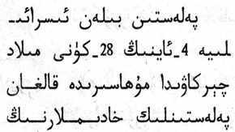
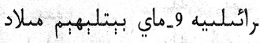
Day-month date forms using a low horizontal connector.
Text direction
Arabic script is written horizontally and right-to-left in the main, but as with most RTL scripts, numbers and embedded LTR script text are written left-to-right (producing 'bidirectional' text).
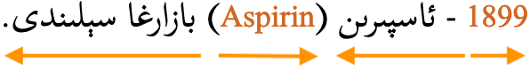
Uighur words are read RTL, starting on the right, but numbers and Latin text (highlighted here) are read left-to-right.
Uighur principally uses word boundaries for line-breaking and basic justification, but uses grapheme boundaries for other operations that work at the sub-word level.
Phrase, sentence, and section delimiters are described in phrase.
Grapheme clusters
Base (Combining_mark)*
In Uighur, segmentation can be realised using Unicode grapheme clusters. A typographic unit is almost always equivalent to a letter, since precomposed code points are available for all letter and diacritic combinations. Only one letter, ئ, decomposes; in that case, the typographic unit includes both the base letter and the combining mark.
Examples:
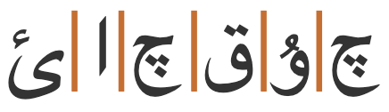
ئاچقۇچ
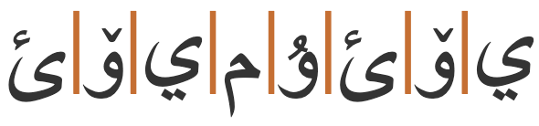
ئۆيمۇئۆي
This kind of typographic unit can be used for forwards deletion, cursor movement & selection, character counts, text spacing, and text insertion.
Uighur text uses guillemets around quotations. Of course, due to keyboard design, quotations may also be surrounded by ASCII double and single quote marks. Note, however, that the order of use is different from that in LTR text, because they are not automatically mirrored.
Observation:fig_quotation appears to show double angle brackets being used as a quotation mark.
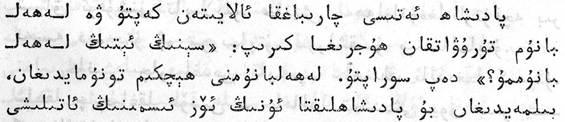
Quotation marks (?) using double angle brackets.
Observation:fig_bracketed_text shows double angle brackets being used to cite lists of characters.
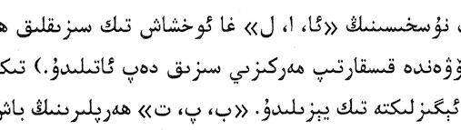
Examples, bracketed with double angle brackets.
Common practice is to break the sentence at any point when it reaches the end of a line.
In-word line-breaking
Uighur text can be hyphenated at the end of a line (see fig_hyphenation).
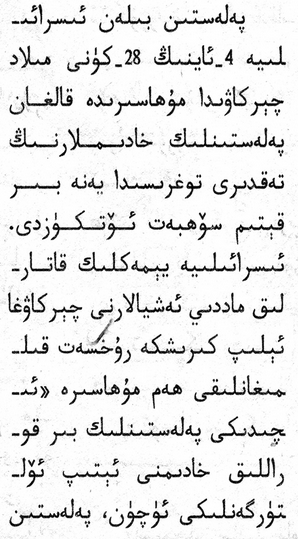
Examples of line-end hyphenation in Uighur. 🗋
The glyphs before the hyphen and at the start of the next line are joined forms.
The hyphen sits on the baseline and looks like a tatweel. A very small gap appears between the hyphen and the last letter of the word at the end of the line.
Observation: The actual 'hyphen' looks like ـ [U+0640 ARABIC TATWEEL]. That would produce the expected joining form at the end of the line, although some additional mechanism would be needed to produce the form at the start of the next line. However, scans of various documents show a very small gap between the horizontal line and the last joining form at the end of the line, as can be seen in fig_hyphenation, which would negate the joining produced by a tatweel.
Line-edge rules
As in almost all writing systems, certain punctuation characters should not appear at the end or the start of a line. The Unicode line-break properties help applications decide whether a character should appear at the start or end of a line.
The following list gives examples of typical behaviours for some of the characters used in Uighur. Context may affect the behaviour of some of these and other characters.
Click/tap on the characters to show what they are.
Baseline lengthening is used to justify lines of text.
fig_kashida shows that baseline lengthening and hyphenation can both be used, and sometimes within the same word.
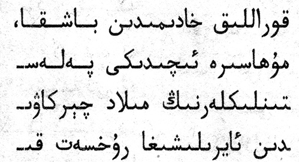
Kashida baseline lengthening and hyphenation used in the same word (2nd line down).
Baselines, line height, etc.
Uighur uses the so-called 'alphabetic' baseline, which is the same as for Latin and many other scripts.
Font baselines should match the alphabetic baseline of Latin script text, and Arabic Uighur fonts should have relative sizes that match. However, Uighur also needs to look right alongside Chinese text, which has a slightly lower baseline and generally larger characters than Latin.
Uighur places vowel and tone glyphs above and below base characters. Several glyphs (especially in independent or final forms) also have long descenders or ascenders.
To give an approximate idea, fig_baselines compares Latin and Uighur glyphs from Noto fonts. The basic part of most Uighur letters is generally less than Latin x-height, however extenders and combining marks reach up to and sometimes beyond the Latin ascenders and descenders. That said, Noto fonts are relatively conservative in terms of glyph heights.
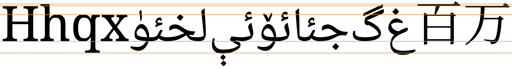
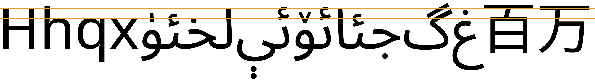
Font metrics for Latin text compared with Uighur glyphs in the Noto Naskh Arabic (top) and Noto Sans Arabic (bottom) fonts.
fig_baselines_other shows similar comparisons for the Scheherazade New and Microsoft Uighur fonts.
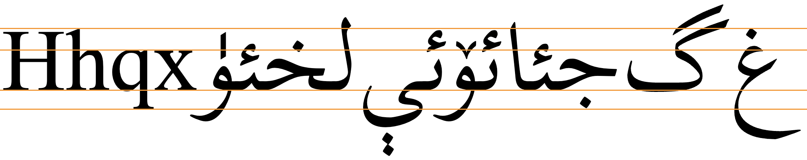
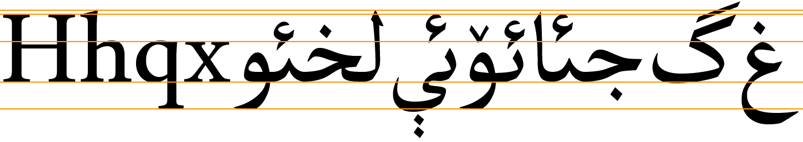
Latin font metrics compared with Uighur glyphs in the Scheherazade New (top) and Microsoft Uighur (bottom) fonts.